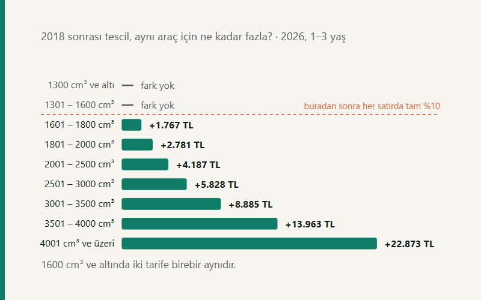

Kısa cevap
2026 MTV tutarları, 2025 tutarlarına %18,95 yeniden değerleme oranı uygulanarak bulundu. Ama ödeyeceğiniz tutar tek bir tablodan çıkmıyor: üç ayrı tarife var ve hangisinin uygulandığını aracınızın tescil tarihi belirliyor. 1/1/2018 ve sonrası tescilli otomobiller (I) sayılı tarifeye, 31/12/2017 ve öncesi tescilliler (I/A) sayılı tarifeye girer. 1300 ve 1600 cm³ satırlarında iki tarife aynıdır; 1601 cm³ ve üzerindeki her satırda (I) tutarları %10 daha yüksektir.
Neden üç tarife var?
İnternette dolaşan "2026 MTV tablosu" başlıklı içeriklerin çoğu tek bir tablo gösteriyor. Bu, araçların bir kısmı için yanlış sonuç üretiyor — ve yanlışlık sessiz: tablo hizalı görünür, tutar makul durur, yalnızca yanlıştır.
197 sayılı Kanun otomobiller için iki ayrı tarife tutuyor. Ayrım 2018'de yapıldı: o tarihten itibaren tescil edilen otomobillerde vergi yalnızca motor hacmi ve yaşa değil, aracın değerine de bağlandı. Eski araçlarda böyle bir kademe yok; onlar için değer hiç sorulmaz.
Üçüncüsü motosikletler: onların kendi tablosu var ve yapısı diğer ikisinden farklı, çünkü yaş grupları da değişiyor.
(I) sayılı tarife — 1/1/2018 ve sonrası tescil
Bu tarifede her motor hacmi satırı için birden fazla değer kademesi bulunuyor. Aracın vergiye esas değeri bir eşiği aşarsa aynı satırın bir üst kademesindeki tutar uygulanır. Aşağıdaki tablo en düşük değer kademesini gösteriyor; aracınızın değeri yüksekse ödeyeceğiniz tutar bundan fazla olur.
| Motor hacmi | 1 – 3 yaş | 4 – 6 yaş | 7 – 11 yaş | 12 – 15 yaş | 16 yaş ve üzeri |
|---|---|---|---|---|---|
| 1300 cm³ ve altı | 5.750 | 4.010 | 2.238 | 1.689 | 593 |
| 1301 – 1600 cm³ | 10.016 | 7.510 | 4.354 | 3.077 | 1.181 |
| 1601 – 1800 cm³ | 19.472 | 15.226 | 8.948 | 5.458 | 2.113 |
| 1801 – 2000 cm³ | 30.679 | 23.625 | 13.886 | 8.264 | 3.248 |
| 2001 – 2500 cm³ | 46.027 | 33.413 | 20.874 | 12.465 | 4.930 |
| 2501 – 3000 cm³ | 64.175 | 55.837 | 34.878 | 18.758 | 6.875 |
| 3001 – 3500 cm³ | 97.744 | 87.954 | 52.976 | 26.443 | 9.684 |
| 3501 – 4000 cm³ | 153.684 | 132.712 | 78.152 | 34.878 | 13.886 |
| 4001 cm³ ve üzeri | 251.554 | 188.627 | 111.714 | 50.206 | 19.472 |
Değer eşikleri satıra göre değişiyor. 1300 cm³ ve 1301–1600 cm³ satırlarında iki eşik var: 309.100 TL ve 541.500 TL. Daha büyük hacimlerde tek eşik bulunuyor — örneğin 1601–2000 cm³ için 775.100 TL, 2001–2500 cm³ için 968.100 TL.
Aracınızın hangi kademeye düştüğünü ve tam tutarı MTV hesaplama aracıyla çıkarabilirsiniz; araç değer kademesini de soruyor.
(I/A) sayılı tarife — 31/12/2017 ve öncesi tescil
Burada değer kademesi yok. Tutar yalnızca motor hacmi ve yaş grubundan çıkıyor.
| Motor hacmi | 1 – 3 yaş | 4 – 6 yaş | 7 – 11 yaş | 12 – 15 yaş | 16 yaş ve üzeri |
|---|---|---|---|---|---|
| 1300 cm³ ve altı | 5.750 | 4.010 | 2.238 | 1.689 | 593 |
| 1301 – 1600 cm³ | 10.016 | 7.510 | 4.354 | 3.077 | 1.181 |
| 1601 – 1800 cm³ | 17.705 | 13.829 | 8.145 | 4.957 | 1.917 |
| 1801 – 2000 cm³ | 27.898 | 21.478 | 12.624 | 7.510 | 2.958 |
| 2001 – 2500 cm³ | 41.840 | 30.372 | 18.977 | 11.333 | 4.479 |
| 2501 – 3000 cm³ | 58.347 | 50.754 | 31.704 | 17.044 | 6.255 |
| 3001 – 3500 cm³ | 88.859 | 79.955 | 48.158 | 24.031 | 8.813 |
| 3501 – 4000 cm³ | 139.721 | 120.647 | 71.048 | 31.704 | 12.624 |
| 4001 cm³ ve üzeri | 228.681 | 171.485 | 101.555 | 45.632 | 17.705 |
İki tarifeyi yan yana koyunca fark net görünüyor: 1300 ve 1600 cm³ satırları birebir aynı, 1601 cm³'ten itibaren her satırda (I) tutarları tam %10 yukarıda. Somut örnek — 2017 model, 1.8 motorlu (1601–1800 cm³), 2026'da 7–11 yaş grubunda bir otomobil:
| (I) — 2018 ve sonrası tescil, en düşük kademe | 8.948 TL |
|---|---|
| (I/A) — 2018 öncesi tescil | 8.145 TL |
| Fark | 803 TL |
803 lira tek başına büyük bir rakam değil. Ama büyük hacimlerde aynı %10 başka bir şeye dönüşüyor: 4001 cm³ ve üzeri, 1–3 yaş grubunda iki tarife arasındaki fark 22.873 TL.
Elektrikli araçta ölçü cm³ değil, kW
Elektrikli otomobilin motor hacmi yoktur; kanun bu yüzden onları motor gücüne göre yerleştirir. Aracın kW değeri dokuz banttan birine düşer, o bandın karşılığı olan hacim satırındaki tutar bulunur ve vergi bu tutarın dörtte biri olarak hesaplanır.
Örnek: 150 kW gücünde, 2024 model bir elektrikli otomobil "120 kW üstü – 150 kW" bandına, yani 2001 – 2500 cm³ satırına düşer. O satırın 1–3 yaş tutarı 50.217 TL; ödenecek vergi bunun dörtte biri, 12.554,25 TL.
Bandların sınırları şöyle: 70, 85, 105, 120, 150, 180, 210 ve 240 kW. Bir bandın üst sınırı dâhildir — 150 kW'lık araç "150 kW"ı aşmadığı için bir üst banda geçmez.
Motosikletler
Motosikletlerin yaş grupları otomobillerden farklı; tablo bu yüzden ayrı okunmalı.
| Motor hacmi | 100 – 250 cm³ | 251 – 650 cm³ | 651 – 1200 cm³ | 1201 cm³ ve üzeri | |
|---|---|---|---|---|---|
| 6 kW üstü – 15 kW | 1.069 | 799 | 589 | 362 | 136 |
| 15 kW üstü – 40 kW | 2.214 | 1.676 | 1.069 | 589 | 362 |
| 40 kW üstü – 60 kW | 5.719 | 3.398 | 1.676 | 1.069 | 589 |
| 60 kW üstü | 13.876 | 9.167 | 5.719 | 4.540 | 2.214 |
Elektrikli motosiklette de ölçü kW: 6 kW altı araçlar kapsam dışıdır, üstündekiler 15, 40 ve 60 kW sınırlarıyla dört banda ayrılır.
Ne zaman ödenir?
MTV yılda iki eşit taksitte ödenir: birinci taksit Ocak ayı sonuna, ikinci taksit Temmuz ayı sonuna kadar. Taksitler eşittir; yukarıdaki 8.145 TL'lik araçta her taksit 4.072,50 TL olur.
Yıl içinde satılan araçta vergi, satış tarihine göre bölünmez — o yılın vergisi kimin adına tahakkuk ettiyse ona aittir. Bu yüzden araç alırken ödenmemiş MTV borcunu sorgulamak, alıcının kendi işidir.
Kasko değeri vergiyi düşürür mü?
Burada sık karıştırılan bir ayrım var ve iki tarife için cevap farklı.
(I/A) tarifesinde — yani 2018 öncesi tescilli araçlarda — kanun doğrudan hükme bağlamış: vergi, aracın kasko değerinin %5'ini aşarsa bir önceki hacim satırının aynı yaş grubundaki tutarı esas alınır. Bu tek adımlıktır; sınır hâlâ aşılıyor diye ikinci kez inilmez.
(I) tarifesinde ise sıkça "%10" diye aktarılan sınır kendiliğinden işleyen bir hüküm değil. Kanun bunu Cumhurbaşkanına verilmiş bir yetki olarak yazıyor ("...belirlemeye, bu oranı %4'e kadar indirmeye ... yetkilidir"). Yürürlükte bir Karar olup olmadığını bilmeden uygulamak hesabı sessizce yanlışlar; bu yüzden araç onu hesaba katmıyor, yalnızca bilgi notu olarak veriyor.
Kaynaklar ve güncelleme
Bu yazı en son 14 Eylül 2026 tarihinde gözden geçirildi. Tablolardaki tutarların hiçbiri elle yazılmadı: hepsi sitenin MTV tarife modülünden üretiliyor ve her değişiklikte testlerle yeniden doğrulanıyor. Tutarlar 2027 Ocak'ta yeniden değerleme oranıyla değişecek; o tarihte yazı güncellenecek.
- 197 sayılı Motorlu Taşıtlar Vergisi Kanunu, (I) ve (I/A) sayılı tarifeler — Mevzuat Bilgi Sistemi
- 213 sayılı Vergi Usul Kanunu, mükerrer madde 298 — yeniden değerleme oranı
- Hesap yöntemi ve testler — hesap-cekirdegi
Sık sorulan sorular
2026 MTV ne kadar arttı?
2026 tutarları, 2025 tutarlarına yeniden değerleme oranı olan %18,95 uygulanarak bulundu. Kanunda yazan ham tutarlar değişmedi; her yıl birikmiş katsayıyla çarpılıyor.
2018 öncesi tescilli aracım neden daha az ödüyor?
Farklı bir tarifeye tabi olduğu için. 1300 ve 1600 cm³ satırlarında iki tarife aynıdır; 1601 cm³ ve üzerindeki her satırda (I) tutarları %10 daha yüksektir.
Elektrikli araçta MTV nasıl hesaplanır?
Motor gücüne göre. Aracın kW değeri dokuz banttan birine düşer, o bandın karşılığı olan hacim satırındaki tutar bulunur ve vergi bu tutarın dörtte biridir.
MTV ne zaman ödenir?
İki eşit taksitte: birinci taksit Ocak ayı sonuna, ikinci taksit Temmuz ayı sonuna kadar.
Kasko değerim düşükse MTV azalır mı?
Yalnızca (I/A) tarifesinde. Vergi kasko değerinin %5'ini aşarsa bir önceki hacim satırının tutarı esas alınır — tek adım. (I) tarifesindeki %10'luk sınır kendiliğinden işleyen bir hüküm değil, bir yetkidir.
İlgili araçlar ve yazılar
- MTV Hesaplama — aracınızın tam tutarını ve taksitini verir
- Araç ÖTV Hesaplama — sıfır araçta anahtar teslim fiyat
- ÖTV'nin basamak etkisi — araç fiyatlarındaki boş aralıklar
- Gümrük Vergisi Hesaplama — yurt dışından alışverişte toplam maliyet